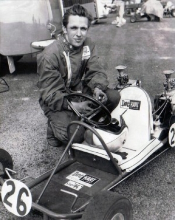
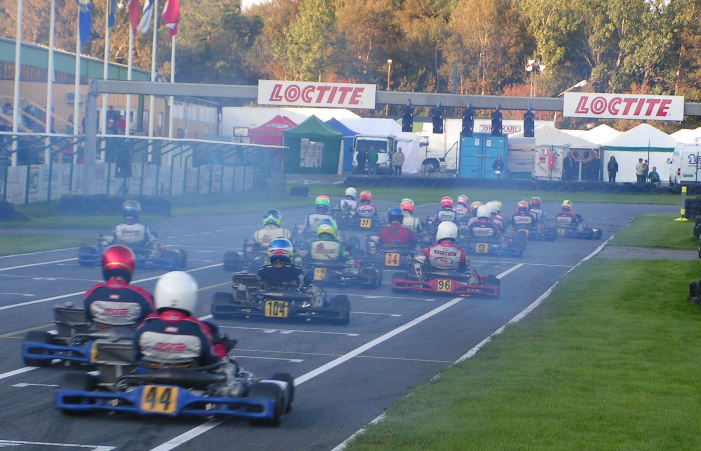

Foto: Team13-arkivet
Det var en gång, fast detta är ingen saga, 13 kartingentusiaster: sex förare och sju mekaniker som slog sig samman och bildade Team13 i mitten av 60-talet. Ett gäng som genom samarbete ville stärka teamets resurser och konkurrenskraft.
Framgångarna kom direkt och andra förare i göteborgsområdet ville vara med och klubben blev ansluten till Svenska Bilsportförbundet. Hemmabana var Kallebäcksbanan, en 425 meter lång och kurvig bana utan depå- eller parkeringsytor. Trots de enkla förhållandena utvecklades klubbens förare till den tidens svenska elit – Thomas Nilsson blev Sveriges förste världsmästare 1968.
Redan på 60-talet arrangerade Team13 såväl SM som Göteborgs Stora Pris för första gången (1968). Efter mer än tio års letande efter ny mark lyckades klubben till slut engagera kommunen och fick tillstånd att anlägga Göteborg Karting Ring i Bulycke. Premiärtävlingen 1984 var just Göteborgs Stora Pris, och 1985 invigdes den nya banan i samband med EM med hela världseliten på startlinjen.
Sedan dess har klubben arrangerat NM, SM och sitt eget Göteborgs Stora Pris, som idag är norra Europas största och mest prestigefyllda tävling med uppemot 440 förare under två dagar. Vi tackar alla funktionärer, förare och andra som under mer än 40 år arbetat och engagerat sig i Team13 och gjort klubben till en av de mest respekterade i Europa.
Göteborgs Karting & Racing Club Team13 har sitt ursprung från mitten av 60-talet. Många entusiaster har genom åren lagt ner stort engagemang i klubben och haft framgångsrika sportsliga resultat. Klubben är idag den största inom bilsport i Västsverige.
Inom klubben finns både bredd på åldrar och ambitionsnivå. I tävlingsidrotten är prestationsförbättring och goda resultat vägledande, medan trivsel och välbefinnande är normgivande i den hälsoinriktade bredd- och motionsidrotten.
Team13 äger Göteborgs Gokartcenter AB (GGC), som bedriver gokartuthyrning samt administrerar tränings- och tävlingsverksamhet åt klubben. GGC är den enda gokartanläggningen i Göteborgsområdet med både inomhus- och utomhusbana.
Personalstyrkan består av platschef plus två heltidsanställda, och förstärks med timanställda under helger och sommarhalvåret.

📸 Bild på styrelsen i grupp och kontaktuppgifter per person är på gång och fylls i löpande.